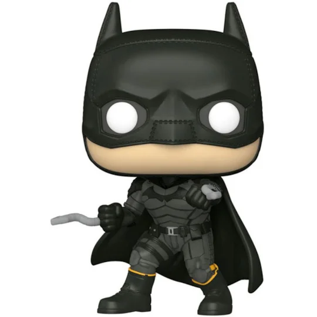
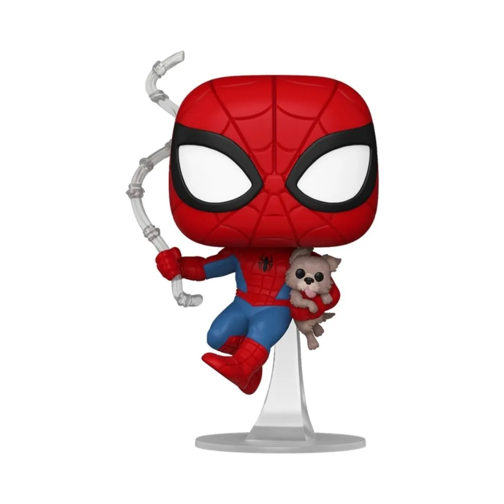

Wolverine
O Wolverine é um personagem da Marvel Comics, conhecido por suas garras de adamantium e seu fator de cura. Ele é um dos membros mais populares dos X Men.
Visitar
Deadpool
O Deadpool é um personagem da Marvel Comics, conhecido por sua capacidade de regeneração e senso de humor irreverente. Ele é um dos heróis mais populares da editora.
Visitar
Mulher-Maravilha
A Mulher-Maravilha é um personagem da DC Comics, conhecida por seu escudo indestrutível e forças sobrehumanas. Ela é uma das heroínas mais populares da editora.
Visitar
Batman
O Batman é um personagem da DC Comics, conhecido por sua inteligência, preparação física e recursos tecnológicos. Ele é um dos heróis mais populares da editora.
Visitar
Homem-Aranha
O Homem-Aranha é um personagem da Marvel Comics, conhecido por seu instinto de herói e suas habilidades sobrenaturais. Ele é um dos heróis mais populares da editora.
Visitar